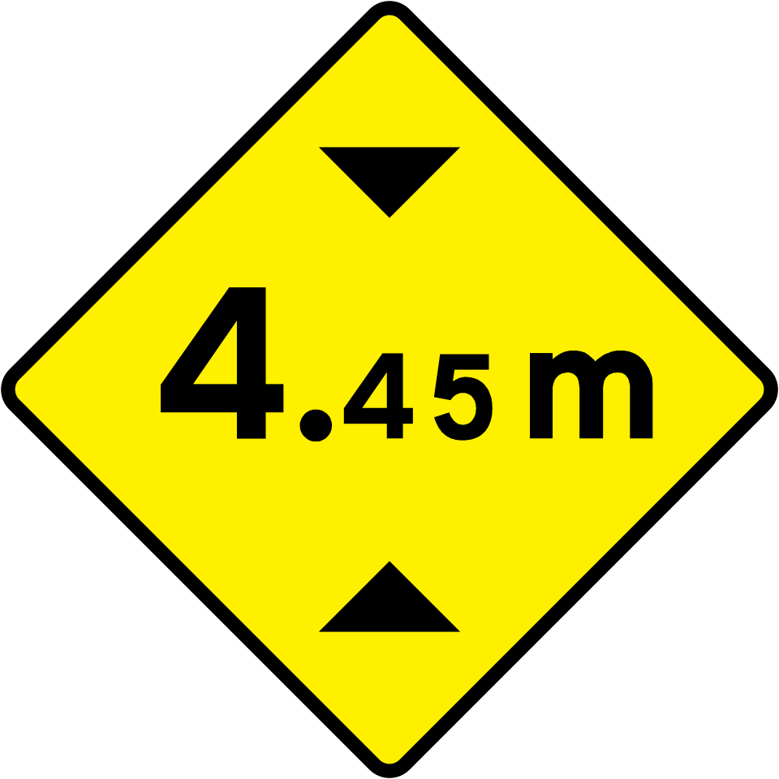
That's too tall.
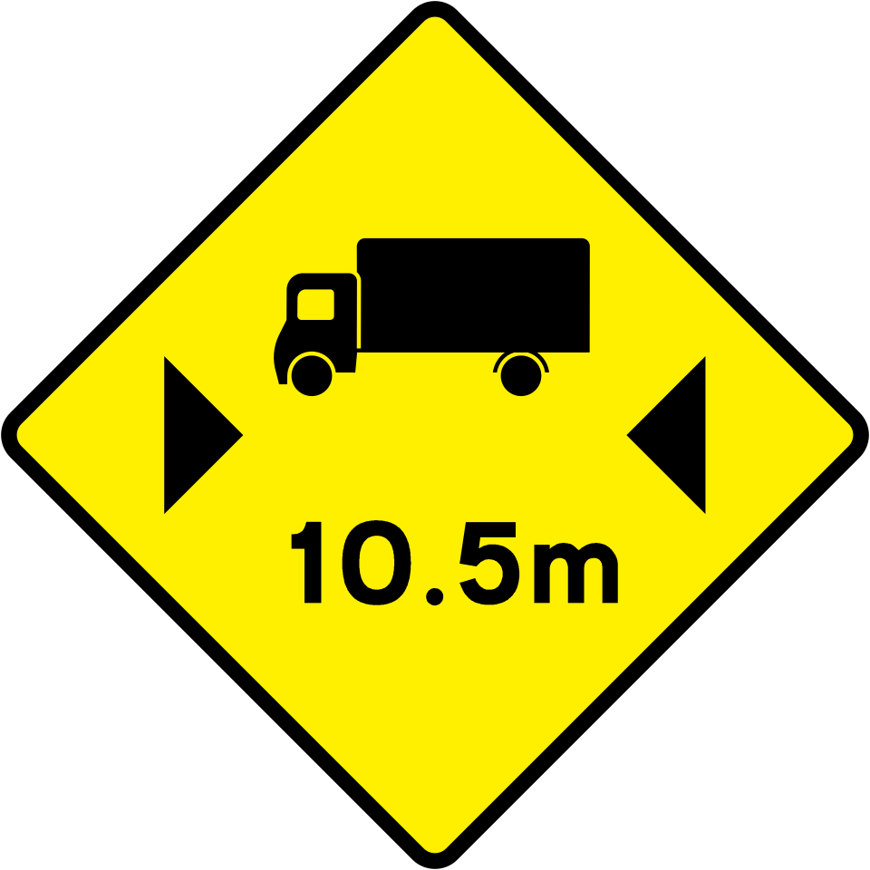
That's too long.
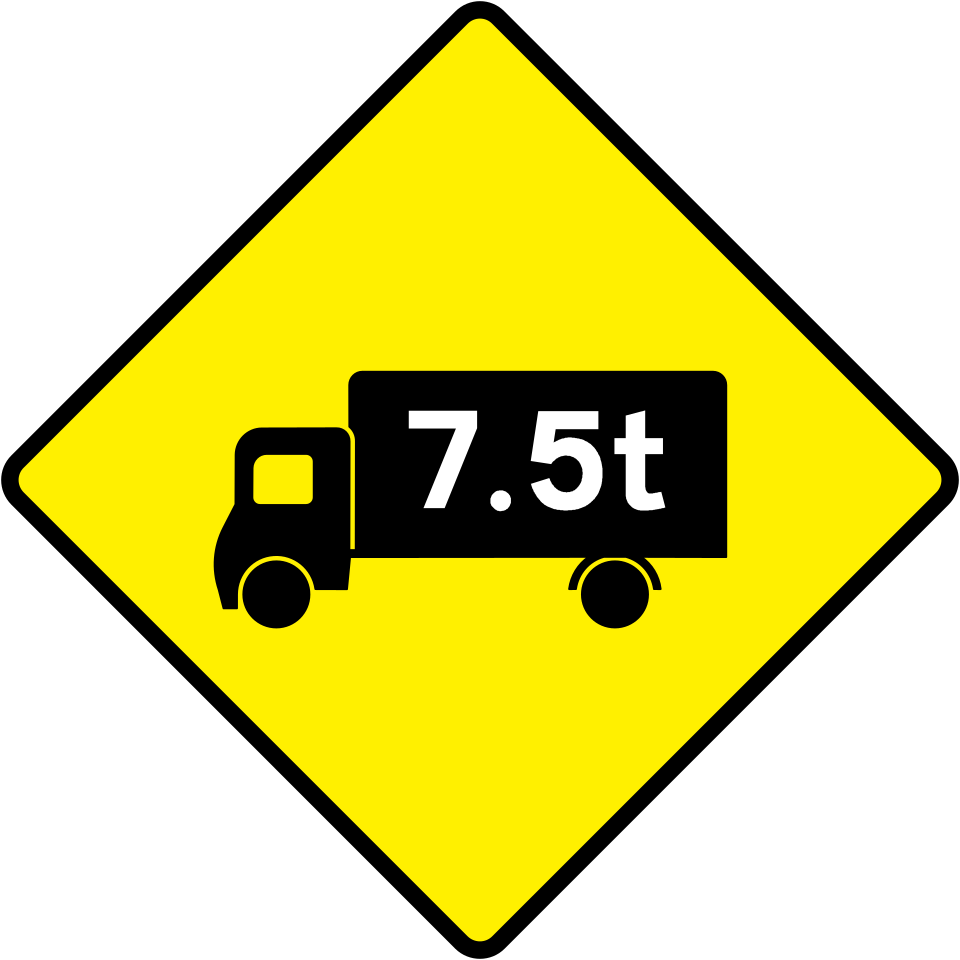
That's too heavy.
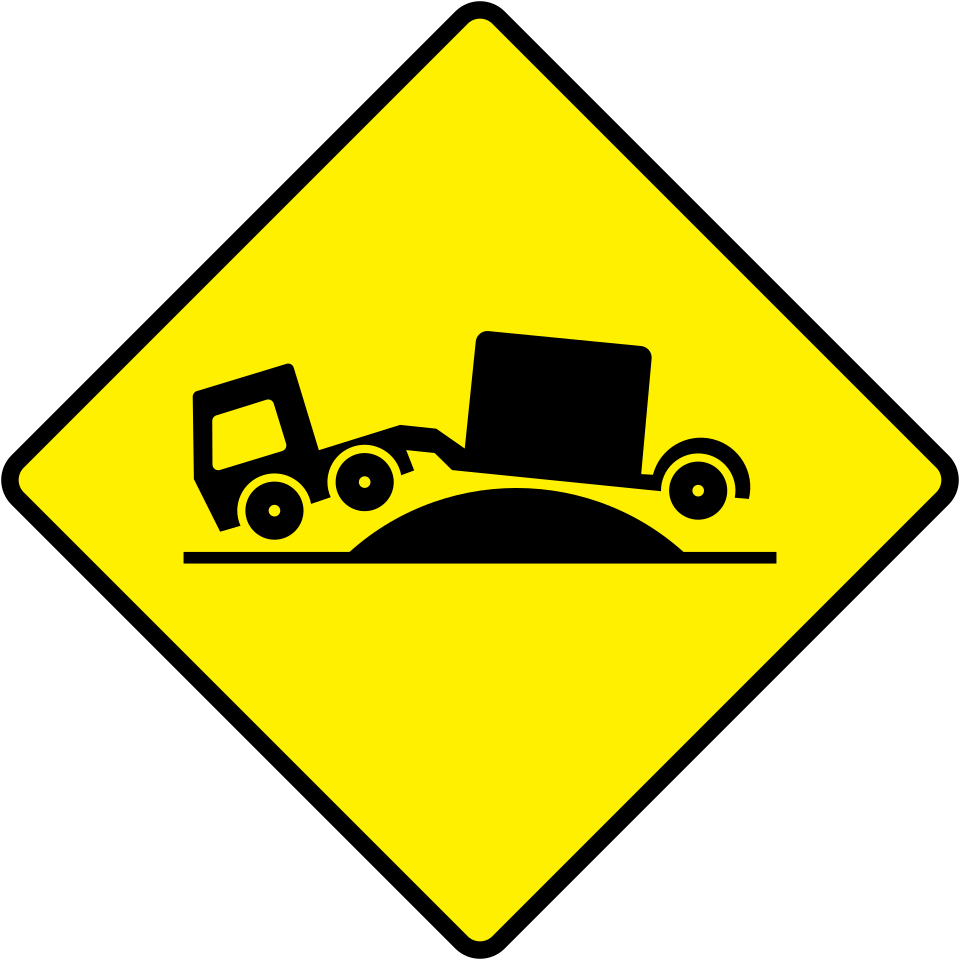
You might get grounded.
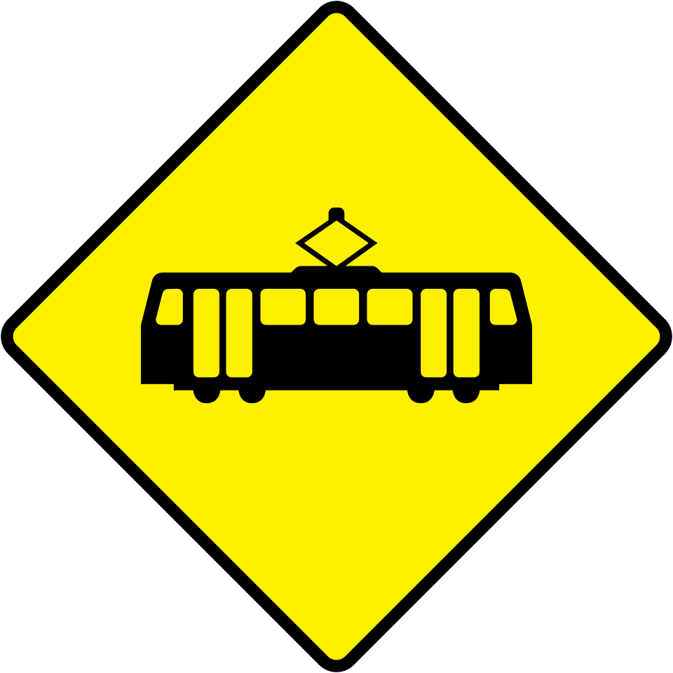
Trams cross here. Don't be an idiot.
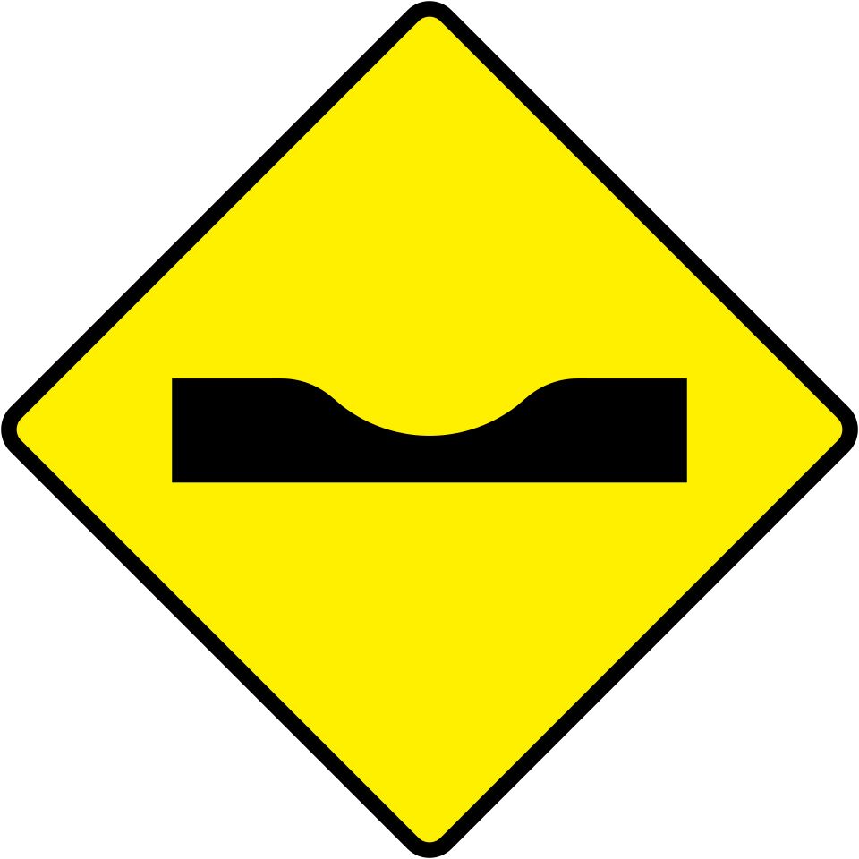
That's quite rough, Mr Road.
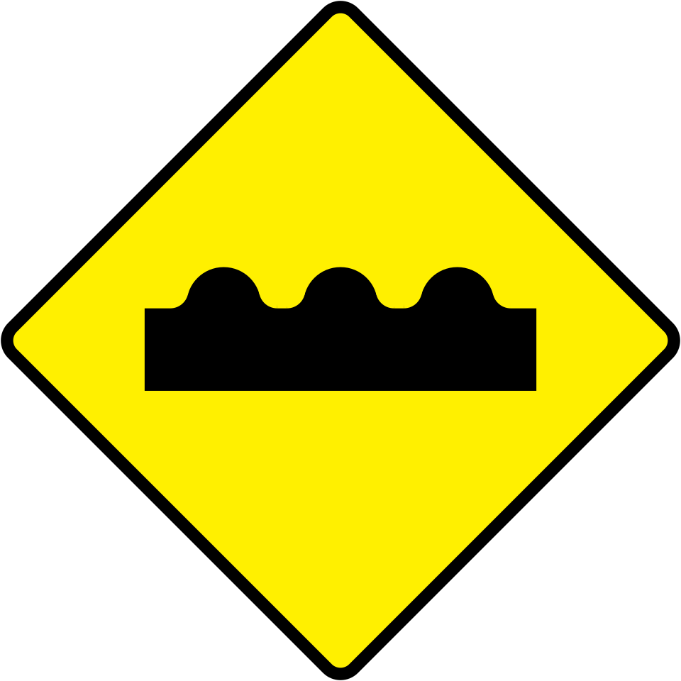
Not smooth.
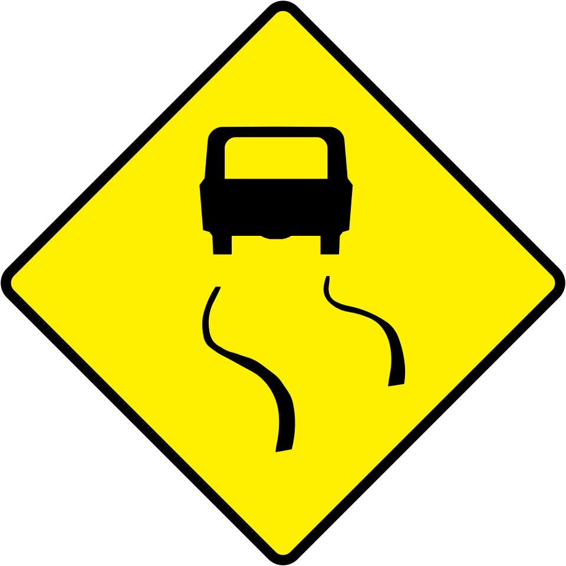
Too smooth.
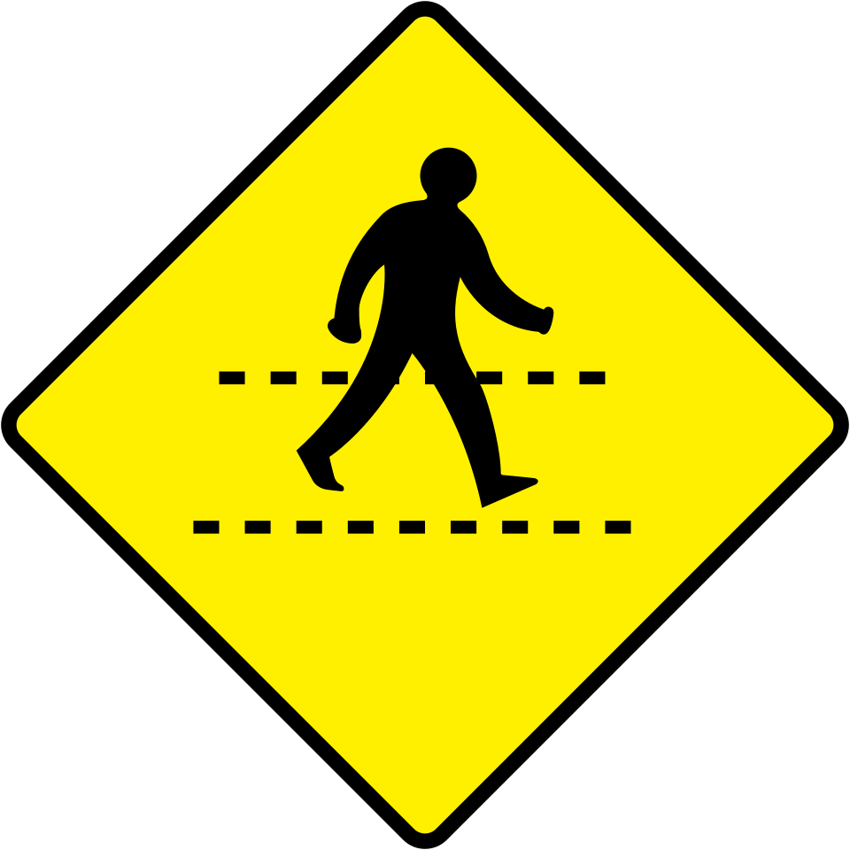
Don't ignore me, please.
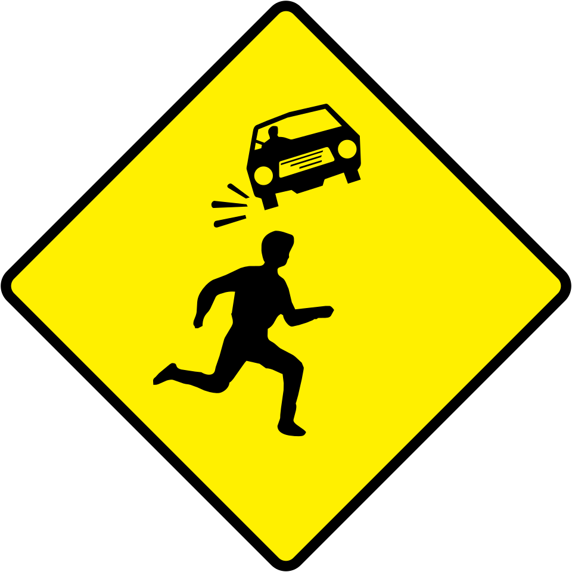
This sign looks so intense, I don't konw why.
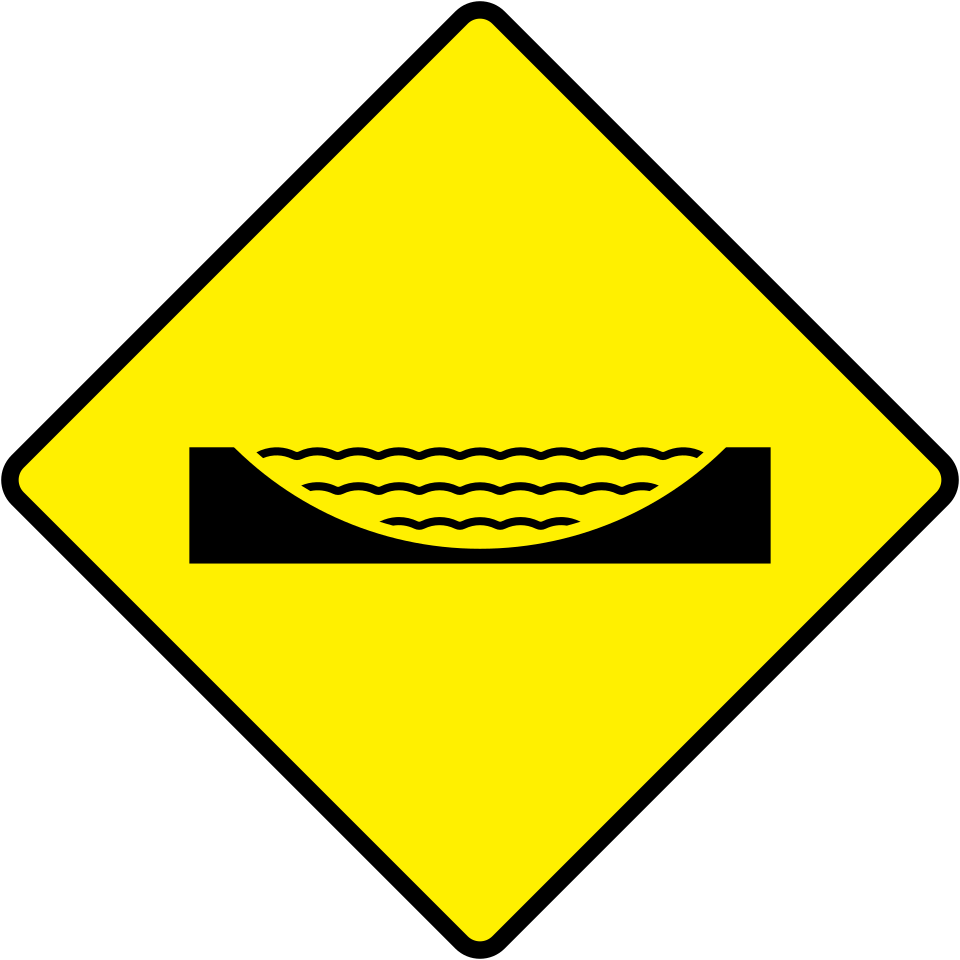
General Motors's better. (Hot take)
There are other hazards.